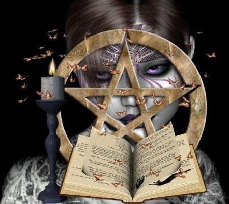

| Características: |  | Fraquezas: |
| - As bruxas (ou bruxos) são seres humanos capazes de se conectar com o mundo sobrenatural para realizar feitiços | - O poder de uma bruxa pode ser reprimido com o uso de ferro, recomenda-se o uso de algemas ou correntes para esse propósito | |
| - Muitos feitiços usam partes de humanos como ingredientes, é por este detalhe que as bruxas geralmente são perigosas | - Baseando-se no fato de que as bruxas ainda são seres humanos, eles compartilham muitas das mesmas fraquezas como seres não-sobrenaturais (por exemplo, idade, decapitação, doença como por exemplo insuficiência cardíaca, asfixia, etc.). No entanto, sabe-se que, especialmente as bruxas mais poderosas podem superar estas deficiências. | |
| - Organizam-se em sociedades secretas e complexas, buscando distância dos caçadores e do mundo civilizado | ||
| - Bruxas tem seus poderes devido a sua linhagem, ou seja, são bruxas por herança |
De acordo com o bestiário de Strauss, ele encontrou durante sua vida vários documentos da Santa Inquisição. Esses documentos continham vários casos de pessoas que foram queimadas na fogueira Santa, em sua maioria, bruxas reais. Ao decorrer da idade média, as bruxas foram amplamente caçadas pela igreja e pelos governantes, fazendo sua população cair absurdamente, devido a esse fato, raramente podemos encontrar um caso de bruxaria nos dias atuais, visto que elas se tornaram extremamente isoladas da sociedade para sua própria proteção.